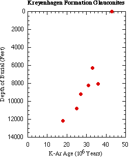
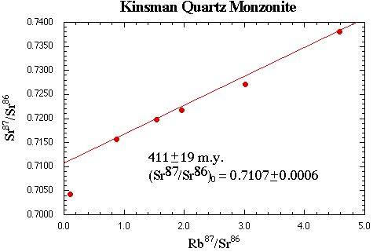
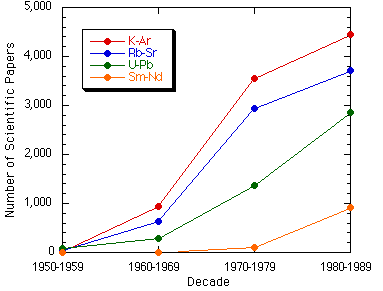

Geocronología kata John Woodmorappe
por Steven H. Schimmrich[Enlaces actualizados: 30 de noviembre de 2003]

Otros enlaces:
|
Contenido
- La Crítica
- El Autor
- Introducción
- Esquema Básico
- Críticas Generales
- Críticas Específicas
- Conclusiones
- Una Nota Personal
- Recursos
- Referencias
- Respuestas de Woodmorappe
- Respuestas de Schimmrich a Woodmorappe
La Crítica
Este es un análisis crítico del artículo "Reevaluación de la datación radiométrica" de John Woodmorappe, que originalmente apareció en el Boletín de la Sociedad de Investigación Creacionista (Volumen 16, septiembre de 1979).
Encontré este artículo cuando me remitieron al libro Estudios en Geología del Diluvio: Una Compilación de Estudios de Investigación que Apoyan el Creacionismo y el Diluvio de John Woodmorappe. Este libro es una compilación de siete reimpressiones del Creation Research Society Quarterly (publicadas por la Creation Research Society), dos reimpressiones del Proceedings of the International Conference on Creationism, y una reimpression de un folleto Impact del Instituto para el Creacionismo. Todos los artículos fueron escritos por Woodmorappe y cada uno aborda diversos temas relacionados con la creencia creacionista de la Tierra joven en un diluvio global geológicamente reciente (el Diluvio de Noé).
El libro no tiene una página de información del editor, pero parece claro a partir del Prólogo, escrito por el conocido creacionista de la Tierra joven Henry Morris, que fue publicado por el Instituto de Investigación del Creacionismo en 1993.
El Autor
En la portada del libro, John Woodmorappe se acredita con un M.S. en geología y un B.A. en biología. El Impact reimpreso en el libro afirma lo siguiente:
John Woodmorappe tiene una licenciatura y una maestría en Geología y una licenciatura en Biología. Es profesor de ciencias y también es investigador asociado en una universidad.
Me pareció extraño que en ningún lugar del libro se indicara dónde Woodmorappe obtuvo sus títulos o su afiliación profesional actual (¿En qué lugar enseña ciencias? ¿En qué universidad es investigador asociado?). Los reimpresos del Creation Research Society Quarterly parecen inusuales en este aspecto, ya que las revistas científicas mainstream imprimen rutinariamente la afiliación profesional del autor y una dirección de contacto.
Creo que es razonable, al evaluar lo que se pretende ser un artículo científico, indagar sobre la experiencia del autor para escribir sobre el tema, especialmente cuando la información relevante proporcionada es tan vaga. Un poco de investigación reveló que "John Woodmorappe" es un nom de plume y un poco más de investigación reveló su verdadera identidad (confirmada por dos fuentes separadas). Evidentemente, posee un legítimo título de M.S. en geología de una universidad secular con la que aún está afiliado y ha publicado un par de artículos en revistas geológicas mainstream bajo su nombre real. En los artículos que ha publicado bajo su nombre real, se afilia al departamento de geología de esa universidad, sin embargo, el Directorio de Departamentos de Ciencias de la Tierra del Instituto Geológico Americano de 1996 no lo lista como miembro del personal, por lo que no he podido encontrar ninguna evidencia de que actualmente enseñe ciencias o sea investigador en cualquier universidad.
Introducción
Para representar con equidad la tesis de Woodmorappe en este artículo, me gustaría reproducir su resumen completo (p. 102):
El uso de la datación radiométrica en Geología implica una aceptación muy selectiva de los datos. Las fechas discrepantes, atribuidas a sistemas abiertos, podrían en cambio ser evidencia contra la validez de la datación radiométrica.In this paper, Woodmorappe seeks to discredit radiometric dating and the geologic time scale since (p. 102):
Se presenta una revisión sistemática y crítica de las aplicaciones de datación, poniendo énfasis en la columna geológica. Se tabulan más de 300 discrepancias serias. Sin embargo, se demuestra que la mayoría de los resultados discrepantes no se publican. Las fechas discrepantes se relacionan arbitrariamente con la petrografía y la geología regional.
Ni las consistencias internas, las concordancias de pares minerales, ni los acuerdos entre métodos de datación diferentes validan necesariamente la datación radiométrica.
La gran dispersión de valores para rocas ígneas y metamórficas (especialmente del Precámbrico) puede indicar una imposición artificial de valores de tiempo sobre estas rocas.
Una vez despojada de todas las afirmaciones sobre el tiempo impuestas sobre ella, la roca fósil testifica del Diluvio Noachita, y toda la vida (fósil y actual) es entonces mutuamente contemporánea, como exige una Creación literal de seis (24 h.) días.
Aunque discreparía firmemente de que desacreditar la datación radiométrica apoyara de alguna manera la ocurrencia de un diluvio global geológicamente reciente, me limitaré a abordar la tesis principal de Woodmorappe, que resume de la siguiente manera (p. 102):
Por el contrario, esta obra busca evaluar críticamente las afirmaciones de la datación radiométrica mediante un enfoque geológico; el autor cree que la datación se comprende mejor en su contexto geológico.
Aquí estoy de acuerdo con el autor, las técnicas de datación radiométrica se comprenden mejor en su contexto geológico. Desafortunadamente, proporcionaré evidencia de que Woodmorappe presenta la mayoría de sus ejemplos carentes de cualquier contexto geológico significativo.
Esquema básico
Tras una breve introducción, el trabajo de Woodmorappe se divide en dos secciones principales. En la primera sección discute la geocronología fanerozoica y en la segunda sección discute la geocronología precámbrica.
La sección Fanerozoico se subdivide en las afirmaciones de Woodmorappe sobre la publicación selectiva de resultados de datación, la datación de rocas sedimentarias, las supuestas racionalizaciones para fechas discordantes de rocas ígneas basadas en evidencia petrográfica y geológica regional, y lo que él considera resultados problemáticos de la datación radiométrica de rocas ígneas acotadas bioestratigráficamente.
La sección Precámbrica se subdivide en afirmaciones sobre la consistencia y concordancia de las fechas radiométricas, las supuestas violaciones de la superposición y las relaciones de corte cruzado derivadas de los datos de edad radiométrica, y los supuestamente problemáticos valores de edad para terrenos ígneos y metamórficos.
También incluido en el documento de Woodmorappe es una única tabla de datos masiva (Tabla 1, p. 103-113) que contiene más de 350 de lo que se alega son fechas radiométricas anómalas con referencias a la literatura primaria.
Criticas Generales
Me gustaría mencionar brevemente tres críticas menores y una crítica mayor que tengo respecto al trabajo de Woodmorappe en su conjunto.
La primera crítica se refiere al formato de este artículo, que puede ser más culpa del Creation Science Research Quarterly que de John Woodmorappe, y es que las referencias se citan todas por un número y se listan por estos números en lugar de alfabéticamente. Dado que hay 445 referencias, todas listadas en tipografía pequeña con abreviaturas de revistas no estándar, resultó muy difícil referirse de ida y vuelta entre el texto y la lista de referencias y localizar rápidamente referencias por los nombres de los autores. También molesto fue el uso frecuente de la abreviatura Op. cit. en toda la lista de referencias, lo que obligaba a una búsqueda extensa a través de varias páginas de referencias para encontrar la cita original.
En segundo lugar, a lo largo del documento, Woodmorappe se refiere retóricamente a los creacionistas de la Tierra joven como creacionistas-diluvalistas y, se asume, a cualquiera que discrepe como evolucionista-uniformitarista o simplemente uniformitarista -- términos con los que creo que la mayoría de los geólogos tendrían problemas dados los malentendidos comunes por parte de los creacionistas de la Tierra joven del término "uniformitarismo", primero popularizado por James Hutton en su Teoría de la Tierra de 1788 (Shea, 1982).
Mi tercera crítica es el uso de la retórica por parte de Woodmorappe en general. Este trabajo pretende ser un artículo científico, y la Creation Research Society Quarterly se considera a sí misma una revista científica, sin embargo, gran parte del lenguaje utilizado por Woodmorappe para describir el trabajo de otros geólogos es una retórica altamente inflamatoria que no se ve normalmente en la literatura científica. Por ejemplo, Woodmorappe afirma que los datos de edad son rutinariamente "explicados fuera de contexto" (p. 102) o "racionalizados fuera de contexto" (p. 113), que algunos valores de edad son aceptados o rechazados como verdaderos de manera "arbitraria" (p. 113), que las fechas anómalas no se reportan en la literatura científica (p. 114), que algunos geólogos han "manipulado" las isócronas Rb-Sr (p. 118 & 120), y que los geólogos "ocultan el fracaso básico del paradigma" (p. 123) de la datación radiométrica. El tono general en todo el artículo es que los geólogos que utilizan la datación radiométrica son a menudo intencionalmente deshonestos en el manejo de los datos.
Finalmente, una crítica general importante a este artículo es su magnitud abrumadora y su tratamiento superficial de los datos. La Tabla 1 del artículo lista más de 350 fechas radiométricas de todas las edades geológicas, hay más de 400 referencias en la lista de referencias, y cada párrafo del artículo de Woodmorappe hace literalmente afirmaciones completamente diferentes contra la validez de la datación radiométrica. Tal gran volumen de material significa que Woodmorappe no dedica más de una o dos frases (si es que lo hace) para explicar cada afirmación, lo que resulta en un tratamiento extremadamente superficial de lo que, en muchos casos, son estudios muy complejos y detallados. La cantidad no equivale a la calidad y solo sirve para abrumar a cualquiera que intente abordar este artículo de manera crítica. En mi opinión, Woodmorappe habría tenido un artículo mucho más fuerte si simplemente se hubiera limitado a una discusión detallada de los docena o así de ejemplos más sólidos que desacreditan una técnica específica de datación radiométrica tal como se aplica a un tipo de roca o entorno geológico específico.
Por lo tanto, dado que es prácticamente imposible para cualquier persona, tal como yo, evaluar de manera adecuada todas las cientos de afirmaciones presentadas en este documento de forma sistemática, decidí evaluar únicamente un subconjunto seleccionado al azar de afirmaciones y mostrar por qué considero que son inválidas. Aunque demostrar que un subconjunto de las afirmaciones de Woodmorappe son inválidas no invalida todas sus afirmaciones, sí muestra que la calidad de este trabajo es altamente cuestionable.
Criticas Específicas
Me gustaría proporcionar varios ejemplos específicos de cómo Woodmorappe maneja inadecuadamente las citas de la literatura geológica, se basa en datos claramente obsoletos para hacer su caso contra la fiabilidad de la datación radiométrica y cita datos fuera de contexto, dando así una falsa impresión de su validez.
Ejemplo 1 - McKee & Noble
Woodmorappe declaró (p. 119):
Hay muchos casos en los que fechas con buena coherencia interna son rechazadas como que no proporcionan la edad correcta de una roca porque entran en conflicto con valores aceptados. En una situación precámbrica, las fechas K-Ar eran mucho más jóvenes que las fechas Rb-Sr (presuntamente correctas), y sobre las fechas K-Ar, McKee y Noble comentaron: "Puede haber ocurrido una pérdida parcial continua de argón. Si esto es así, la coherencia de estas edades aparentes es fortuita."
En el ejemplo anterior, Woodmorappe citó mal a McKee y Noble (referencia 268) omitiendo parte de una oración, sin indicar esto con puntos suspensivos, y sin completar su idea. Lo que realmente escribieron fue (McKee & Noble, 1976, p. 1190):
La pérdida parcial continua de argón pudo haber ocurrido como resultado de la meteorización o del calentamiento debido a la enterramiento profundo, aunque ninguno de estos fenómenos es evidente en los estudios de campo o petrográficos. Si esto es así, la consistencia de estas edades aparentes es fortuita. La consistencia de las tres edades K-Ar reportadas aquí sugiere que las edades radiométricas inferiores obtenidas por el método K-Ar pueden reflejar un episodio de calentamiento hace aproximadamente 800 m.a.
Esta es una cita deliberadamente errónea de McKee y Noble y este ejemplo por sí solo sería suficiente para impedir la publicación de este artículo en cualquier revista científica respetable.
También me gustaría hacer un par de otras observaciones sobre la interpretación que Woodmorappe hace de este artículo. Él afirmó que las fechas K-Ar eran mucho más jóvenes que las (presumiblemente correctas) fechas Rb-Sr, lo cual es cierto pero puede ser engañoso para los no geólogos. El método Rb-Sr dató las basaltos a 1.090.000.000 de años y el método K-Ar dató las basaltos a 800.000.000 de años: una gran diferencia de 290.000.000 de años, pero ambas fechas siguen estando bien dentro del Proterozoico (Precámbrico tardío). No estamos hablando de la posibilidad de que la lava tuviera 6.000 años de antigüedad, como los creacionistas de la Tierra joven podrían querer que usted crea.
Bueno, ¿qué hay de esa diferencia de 290.000.000 de años? No es una discrepancia trivial. Antes de abordar eso, me gustaría referirme al resumen del artículo de McKee y Noble:
Six muestras completas de roca de basalto procedentes de las Lavas de Cardenas del Grupo Unkar del Precámbrico más joven arrojan una isócrona Rb-Sr de 1.09 +/- 0.07 mil millones de años. Se cree que esta edad se aproxima al momento de la extrusión de la lava. Las determinaciones de edad potasio-argón de la lava son considerablemente más jóvenes y pueden reflejar tanto la pérdida difusiva de 40-Ar como un período de calentamiento hace unos 800 millones de años.
Por cierto, no parece que McKee y Noble estén haciendo lo que Woodmorappe dice slanderosamente que hacen los geólogos (p. 120):
El número de casos de concordancias no cabe duda que está exagerado por la publicación selectiva de resultados de datación. En una discordancia, se publicarán los resultados del método más considerado correcto y se ignorarán los resultados de otro método.
McKee y Noble no ignoraron en absoluto los datos K-Ar, ¡están listados para que todos los vean!
Lea el resumen y luego lea la cita completa tal como debería haber sido reportada por Woodmorappe. Dado que él solo reporta una parte de la cita, parece que la única explicación es la pérdida difusa de argón "afortunada". McKee y Noble, sin embargo, continúan hipotetizando otra razón, un episodio de calentamiento alrededor de 800 Ma. ¿Por qué no discutió Woodmorappe el artículo de Elston y McKee (1982) que proporciona evidencia para ...la ocurrencia de un evento de reseteo térmico a 825 Ma relacionado con el levantamiento y la erosión asociados con un evento orogénico leve en la región del Gran Cañón (Larson, et al., 1994, p. 266)?
¿Por qué Woodmorappe ignora este artículo y muchos otros, que claramente tienen relevancia para el caso que intenta hacer?
Una mejor explicación para la pérdida de argón, sin embargo, fue propuesta en un estudio más reciente de Larson, et al. (1994). Informaron sobre su estudio detallado de la Basalto de Cardenas y su edad Rb-Sr de 1125 +/- 174 Ma es una fecha que es estadísticamente idéntica a la derivada por McKee y Noble 20 años antes. Por cierto, revisa los diagramas de isócronas para Rb-Sr reportados por McKee y Noble (1976) y Larson, et al. (1994). Ambos tienen hermosas correlaciones de diferentes series de muestras. De todos modos, Larson, et al. (1994, p. 266-267) encontraron una correlación entre las fechas K-Ar y el porcentaje en peso de K2O en las muestras. Las muestras con valores anormalmente altos de K2O se asocian con fechas más jóvenes, por lo que propusieron una explicación perfectamente razonable (y ¡probable!) para las malas fechas K-Ar de la Basalto de Cardenas:
La explicación que parece más consistente con los datos es que la disminución progresiva de las fechas es el resultado de una mayor pérdida de Ar asociada con la alteración preferencial de enterramiento de aquellos flujos que contienen mayores contenidos de K2O. Cuanto más félsico es el flujo, mayor es su viscosidad y mayor es el contenido de material mesostático que contiene grandes cantidades de K2O y, por lo tanto, mayor es la probabilidad de pérdida de Ar durante la metamorfosis de enterramiento.
Por lo tanto, es claro que Woodmorappe citó mal a McKee y Noble y fue muy selectivo en la presentación de datos para apoyar sus afirmaciones. Un examen completo de los datos muestra la fiabilidad del método Rb-Sr para fechar el Basalto de Cardenas y una explicación comprobable para la pérdida de argón y la inadecuación del Cardenas para los métodos de datación K-Ar. Este es un hermoso ejemplo de cómo funciona la ciencia en el mundo real.
Ejemplo 2 - Wasserburg & Lanphere
Woodmorappe declaró (p. 120):
Otros acuerdos entre diferentes métodos de datación se consideran carecer de cualquier significado. Al comentar sobre un acuerdo K-Ar/Rb-Sr en biotita, Wasserburg y Lanphere dijeron que "... es un caso de concordancia accidental. Es decir, el tiempo calculado no tiene ningún significado en términos de un evento."
Para comenzar, completemos el pensamiento de Wasserburg y Lanphere (1965, p. 745) citando la declaración relevante completa, como Woodmorappe, una vez más, debería haberlo hecho:
En todos los casos, el estroncio parece tener una retentividad mayor o igual que la del argón en cada especie mineral, y el orden relativo de las retentividades minerales para el estroncio es feldespato potásico > muscovita > biotita. Cabe señalar que la biotita (N-11) da edades de argón y estroncio de 1390 y 1353 m.a., lo cual es un caso de concordancia accidental. Es decir, el tiempo calculado no tiene ningún significado en términos de un evento. Esto sugiere que tanto el argón radiogénico como el estroncio pueden perderse en proporciones iguales de la biotita durante ciertos eventos metamórficos, y por lo tanto que las edades basadas en resultados concordantes de este mineral deben considerarse con cautela.
Woodmorappe quiere implicar que una correlación entre los resultados de la datación K-Ar y Rb-Sr no tiene significado. Lo hace porque las correlaciones entre diferentes técnicas son comúnmente tomadas como evidencia de la validez de las fechas obtenidas, como se demuestra en este pasaje de Dalrymple (1991, p. 124):
El uso de diferentes esquemas de desintegración en la misma roca es una excelente manera de verificar la precisión de los resultados de edad. Si dos o más relojes radiométricos que funcionan a diferentes ritmos dan la misma edad, esto es una evidencia poderosa de que las edades son correctas.
¿Está Dalrymple equivocado dado lo que encontraron Wasserburg y Lanphere? No, ya que esto es un caso especial de una sola fecha de un mica de biotita. Es bien conocido (Dalrymple y Lanphere, 1969, p. 200) que:
...el estroncio y el argón pueden perderse de la biotita a casi la misma tasa, y las edades potasio-argón y rubidio-estroncio serían concordantes pero incorrectas.
Esta muestra proviene de un pegmatita, y se demostró que había perdido tanto Sr como Ar debido a la metamorfismo de contacto provocado por la intrusión de rocas graníticas más jóvenes en un terrano metamórfico más antiguo. Por lo tanto, debemos tener en cuenta el siguiente consejo (Dalrymple, 1991, p. 123-124):
Otro método es realizar mediciones de edad de varias muestras (minerales o rocas) de la misma unidad de roca. Esta técnica ayuda a identificar perturbaciones geológicas posteriores a la formación porque las diferentes especies minerales suelen responder de manera distinta al calentamiento y a los cambios químicos.
Se analizaron otros minerales (muscovita y microclina) de la misma zona que no mostraron tal coincidencia accidental (Wasserburg & Lanphere, 1965, p. 745). La cita de Woodmorappe del trabajo de Wasserburg y Lanphere fue incompleta y engañosa.
Ejemplo 3 - Adams, et al.
En la Tabla 1 (p. 111), Woodmorappe tiene una entrada que dice:
475 44 Rb-Sr b *bentonita/Tennessee, EE. UU. 366
Esto denota un ejemplo de bentonita acotada bioestratigráficamente (una ceniza volcánica antigua alterada) en Tennessee que arrojó una datación radiométrica Rb-Sr de biotitas (el b que sigue a Rb-Sr) de 44 millones de años cuando debería haber sido de 475 millones de años según el número de referencia 366 de Woodmorappe (Adams, et al., 1958).
Dado que la referencia de Adams, et al., (1958) se refiere a un breve resumen presentado para una reunión de la Geological Society of America, me gustaría reproducirlo a continuación en su totalidad (incluyendo la tabla de datos) para que podamos ver exactamente lo que dice:
Se han realizado intentos preliminares para obtener edades absolutas de bentonitas mediante análisis isotópico de Sr/Rb de mica separada de las bentonitas. De las cuatro muestras de mica listadas a continuación, una proporciona una edad aparente imposiblemente baja (44 m.a.) para la bentonita hospedante; las otras tres edades aparentes son algo sistemáticas al indicar edades que son superiores a las mejores estimaciones para las bentonitas hospedantes. Es interesante observar que el máximo de 80 m.a. para el tiempo entre el Ordoviciense Medio y el Devónico Tardío está en satisfactorio acuerdo con las mejores estimaciones. Refinamientos adicionales en la técnica deberían arrojar edades más precisas.
=============================================================== . Probable Edad . Edad Sr/Rb de Edad Estratigráfica de Bentonitas . de Bentonitas . Mica Separada . (m.a.) . (m.a.) =============================================================== GH-25 Miembro de Dowelltown de la . 270 +/- 30 . 410 +/- 40 pizarra de Chattanooga; Devónico Superior . . 417 +/- 40 . . . GH-14 Caliza de Chicamauga, . 390 +/- 40 . 44 Ordoviciense Medio . . GH-27 Caliza de Carters, Grupo . 390 +/- 40 . 496 +/- 50 de Stone Rivers, Ordoviciense Medio . . . . . GH-31 Caliza de Egglestone, . 390 +/- 40 . 451 +/- 50 Ordoviciense Medio . . 479 +/- 50 ---------------------------------------------------------------El uso de radioactividades naturales de vida más corta por ejemplo, K-40 en la mica - y el uso de métodos Th-U-Pb en los zircónes euhedrales finos también presentes en las bentonitas pueden también conducir a fechas más precisas para estos lechos marcadores estratigráficos.
Cualquiera que vea esta referencia debería estar inmediatamente alerta, dado que fue publicada en 1958. Una búsqueda en GeoRef (una gran base de datos bibliográfica geológica) con las palabras clave "((Rubidio y Estroncio) o (Rb y Sr))" revela que uno de los primeros artículos geológicos sobre la datación Rb-Sr fue publicado por Hahn en 1944 y que solo hubo un total de 26 artículos publicados sobre este tema antes de 1958. Para comparar, GeoRef lista 1.826 artículos con estas palabras clave desde 1990.
Aunque había algunos geólogos trabajando en 1958 en la aplicación de la datación Rb-Sr a la geología, este era un campo totalmente nuevo y estaban severamente limitados por las restricciones de su equipo analítico, particularmente el espectrómetro de masas. Woodmorappe debería estar discutiendo el estado actual de la datación Rb-Sr, no el estado de la datación Rb-Sr hace 40 años.
Una breve digresión... Algunos pueden cuestionar si esta es una crítica justa dado que Woodmorappe publicó este artículo por primera vez en 1979. Creo que sí, por varias razones:
- Las comunicaciones personales con John Woodmorappe indican que aún respalda la validez de este documento (lea la respuesta de Woodmorappe a esta crítica).
- Este documento fue reimpreso sin editar en 1993 para el libro Studies in Flood Geology.
- El documento es comúnmente citado en publicaciones recientes de creacionismo de la Tierra joven (véase, por ejemplo, Morris, 1994, p. 54).
- El libro Studies in Flood Geology es actualmente utilizado por muchos creacionistas de la Tierra joven como una herramienta apologética (véase, por ejemplo, la reseña proporcionada por la Sociedad de Investigación Creacionista).
Una acusación más grave contra esta referencia citada por Woodmorappe, sin embargo, se explica claramente en la siguiente cita de Dicken (1995, p. 40-41):
Cuando el método Rb-Sr se utilizó por primera vez en geocronología, la pobre precisión alcanzable en la espectrometría de masas limitó la técnica a la datación de minerales ricos en Rb, como la lepidolita. Estos minerales desarrollan tales relaciones 87Sr/86Sr elevadas a lo largo del tiempo geológico que se podía asumir una relación inicial uniforme de 87Sr/86Sr de 0.712 en todos los estudios de datación sin introducir errores significativos. Tales determinaciones se llaman 'edades modelo' porque la relación inicial se predice mediante un modelo en lugar de medirse directamente.
Posteriormente, el método Rb-Sr se extendió a minerales menos exóticos formadores de rocas, como la biotita, la moscovita y el K-feldespato, con relaciones Rb/Sr más bajas. Sin embargo, a menudo se generaron fechas discordantes, al asumir una relación inicial de 0.712 cuando la relación inicial real era más alta. Este problema fue reconocido por primera vez por Compston y Jeffery (1959), y superado con la invención del diagrama isócrona (Nicolaysen, 1961).
Por lo tanto, tenemos a Woodmorappe citando un artículo de 1958 como evidencia en contra de la datación radiométrica debido a una edad anómala reportada, sin embargo, Woodmorappe ignora el hecho de que tales problemas fueron reconocidos como debidos a la inválida suposición de una relación inicial 87Sr/86Sr de 0.712 en 1959 (una suposición que necesitaba hacerse en ese momento debido a las limitaciones de la espectrometría de masas en la década de 1950) y para 1961 se diseñó una técnica completamente nueva, que aún se utiliza hoy en día, que elimina totalmente el problema.
Por lo tanto, este dato no respalda, de ninguna manera, la tesis de Woodmorappe de que las técnicas actuales de datación radiométrica son poco fiables. Este ejemplo solo pone en cuestión el juicio de Woodmorappe por incluirla.
Ejemplo 4 - Hurley, et al.
En la Tabla 1 (p. 104-111), Woodmorappe tiene al menos 5 entradas distribuidas entre cinco páginas separadas que, colocadas juntas aquí, son:
118 88 K-Ar g sedimento/Esciagnelles, Francia 37
~260 165 K-Ar g sedimento/Vestspitsbergen, Noruega 92
334 250-78 K-Ar g lutita/Texas, EE. UU. 123
390 303 +/- 18 Rb/Sr g Formación Carlisle Center/Nueva York, EE. UU. 144
510 411-50 K-Ar g Formación Franconia/Wisconsin-Minnesota, EE. UU. 185
413-33 Rb-Sr g
La primera columna indica las edades bioestratigráficamente esperadas para los sedimentos o rocas sedimentarias en millones de años, la segunda columna proporciona la edad determinada radiométricamente utilizando el mineral glauconita (denotado por la g), K-Ar o Rb-Sr es el método de datación, se indican el tipo y las ubicaciones de las muestras, y la última columna hace referencia a la lista de referencias de Woodmorappe. A pesar de los diferentes números de referencia que Woodmorappe proporciona, todos estos datos se encuentran en un solo artículo de Hurley, et al. (1960).
Dado que Woodmorappe no proporciona otra información, veamos qué dicen Hurley, et al. (1960, p. 1793) sobre su estudio:
En este estudio se ha intentado descubrir si el mineral glauconita puede utilizarse para la medición de la edad absoluta de los sedimentos. La investigación ha incluido la medición de las proporciones K-Ar y Rb-Sr en materiales de glauconita bien datados, así como un examen intensivo del material en sí para ver si existe alguna correlación entre las variaciones de edad observadas y la naturaleza física, la historia geológica o el entorno de las muestras.
Este artículo, publicado en 1960, es uno de los primeros estudios sobre la idoneidad del mineral glauconita para la datación radiométrica. ¿A qué llegaron a la conclusión (p. 1808)?
En resumen, se concluye que existe algún mecanismo consistente que actúa para reducir la edad de los glauconitas en un 10-20 por ciento. Parece que este mecanismo puede estar relacionado con modificaciones en la estructura del material glauconítico durante la diagénesis y que este proceso continúa con el tiempo.
¿No parece que hayan encontrado que la glauconita no es tan adecuada para la datación radiométrica, ya que consistentemente proporciona edades más jóvenes de lo esperado? En 1961, Evernden, et al. (p. 78) escribieron:
Los datos acumulados de varios laboratorios de geocronología parecen indicar que la glauconita es de utilidad dudosa para el propósito de obtener fechas precisas de estratos sedimentarios mediante el método potasio-argón.
Todo esto solo muestra que el mineral glauconita puede ser inadecuado para la datación radiométrica porque pierde argón. No demuestra en absoluto que la datación radiométrica, en general, sea fundamentalmente defectuosa. La inclusión de estos datos por parte de Woodmorappe, provenientes de un estudio preliminar que intenta evaluar la utilidad del glauconita, es escasa en equidad. Especialmente cuando los datos están dispersos a lo largo de una tabla de datos de varias páginas sin comentario.
¿Pero es esta toda la historia? Escuche lo que dice Odin (1982, p. 402) sobre la datación radiométrica de la glauconita (ahora referida como glauconia):
Los datos recientes obtenidos sobre la glauconita, gracias a los métodos mejorados de investigación geoquímica junto con una mejor comprensión de la etapa de génesis de esta facies marina autígena, permiten el diseño de un método específico de muestreo.
Los estudios preliminares realizados sobre estas muestras ayudarán a presumir una mayor fiabilidad para los cronómetros seleccionados. Este método por sí solo establecerá la edad numérica de un horizonte estratigráfico en ausencia de ideas preconcebidas. El método propuesto permitirá una evaluación a priori de la fiabilidad de los datos y tiende a eliminar los procedimientos a menudo utilizados que deducen después del análisis la historia geoquímica de la glauconita según si la edad obtenida "parece correcta" o no. No implicamos que pueda saberse con certeza de antemano que una edad aparente será la de deposición o no, pero sabemos mejor hoy cómo aumentar la probabilidad de medir edades de glauconita que reflejen con precisión las edades de deposición.
Woodmorappe citó de una fuente que ahora está obsoleta. Nuestro conocimiento sobre cómo evaluar con mayor precisión las edades radiométricas de la glauconita ha aumentado considerablemente desde 1960 y el artículo de Hurley, et al. ahora solo tiene interés histórico. Los puntos de datos utilizados por Woodmorappe nunca deberían haberse incluido en la tabla de datos porque provienen de un estudio que, aunque importante en 1960, ahora está obsoleto.
Ejemplo 5 - Neumann
En la Tabla 1 (p. 111), Woodmorappe tiene una entrada que dice:
260 259-315 K-Ar b *Serie de Oslo (subvolcánicos)/Noruega 93
216 Th232/Pb208
La referencia 93 se refiere a un artículo de Neumann (1960). Examinemos exactamente lo que dice Neumann (p. 173-174) sobre estos datos:
Algunas de las edades aparentes indicadas en la tabla 1 son ahora de interés histórico únicamente, y algunas de ellas deberían ser descartadas por diferentes razones. Las edades U/Pb y Th/Pb, o una combinación de ellas, sin determinaciones isotópicas pueden ser engañosas en algunos casos y, por lo tanto, deben ser descartadas debido a su falta de fiabilidad. Las edades de plomo-alfa de los zircones darán solo una primera aproximación y son demasiado rudimentarias para merecer cualquier discusión adicional. Lo mismo aplica en cierta medida a las edades K-Ar de los feldespatos, ya que las causas de una posterior fuga del Ar ya acumulado en este mineral no se comprenden actualmente lo suficiente para permitir conclusiones seguras sobre la historia de formación de los feldespatos en cuestión basándose en sus edades aparentes K/Ar.
Este artículo es una compilación de estudios anteriores realizados en la década de 1950 cuando estas técnicas estaban siendo desarrolladas por primera vez. Según el autor, gran parte de los datos ya estaban desactualizados para 1960. Una vez más, Woodmorappe introduce claramente datos obsoletos en su tabla de datos y los presenta como evidencia contra la fiabilidad de la datación radiométrica.
Ejemplo 6 - Evernden
En la Tabla 1 (p. 103-105), Woodmorappe tiene 5 entradas distribuidas entre tres páginas separadas que, colocadas juntas aquí, son:
42 18-36 K-Ar g sedimento/California, EE. UU. 10 65 46 K-Ar g sedimento/California, EE. UU. 16 115 31 K-Ar g sedimento/Salzgitter, Alemania Occidental 36 152 26 K-Ar g sedimento/Braunschweig, Alemania Occidental 49 165 21 K-Ar g sedimento/Coston Del Vette, Italia 54
La primera columna indica las edades bioestratigráficamente esperadas para los sedimentos en millones de años, la segunda columna proporciona la edad determinada radiométricamente de los sedimentos, K-Ar es el método de datación, la letra g indica que el mineral datado fue glauconita, se indican las ubicaciones de los sedimentos y la última columna hace referencia a la lista de referencias de Woodmorappe. A pesar de los diferentes números de referencia que Woodmorappe proporciona, todos estos datos provienen de un único artículo de Evernden, et al. (1961). Dado que Woodmorappe no sitúa los datos en ningún tipo de contexto, examinemos este artículo y veamos qué está ocurriendo aquí.
El resumen del artículo de Evernden, et al. (1961, p. 78) establece que:
Las dataciones potasio-argón de tobas, flujos de lava e intrusiones estratigráficamente conocidos que contienen biotita, cuando se utilizan como controles, demuestran que la illita y la glauconita, seleccionadas cuidadosamente con respecto a la historia geológica y preparadas adecuadamente, son apropiadas para obtener fechas casi tan precisas como las provenientes de biotita ígnea.
Los autores quieren demostrar que la illita y la glauconita pueden utilizarse para la datación K-Ar de sedimentos. Claramente admiten que existen algunas dificultades al utilizar la glauconita (p. 78):
Los datos acumulados de varios laboratorios de geocronología parecen indicar que la glauconita es de utilidad dudosa para el propósito de obtener fechas precisas de estratos sedimentarios mediante el método potasio-argón.
Pero continúan argumentando que puede utilizarse si las muestras se recogen cuidadosamente con respecto a su historia geológica y dedican algún tiempo a discutir los factores que son perjudiciales para la precisión de las fechas K-Ar de glauconitas. Una cosa importante que hay que tener en cuenta es la fecha (1961) de este artículo. Una búsqueda en GeoRef utilizando las palabras clave "(glauconita y (ar o argón))" muestra que los geólogos solo comenzaron a aplicar la datación K-Ar a glauconitas en 1958 y que esto era un campo de estudio nuevo (11 artículos sobre el tema, la mitad de ellos en ruso, antes de 1962). Los geólogos de esa época intentaban evaluar la aplicabilidad de la datación K-Ar a la glauconita. Por lo tanto, incluso antes de comenzar a examinar esta afirmación, vemos que Woodmorappe está informando sobre el estado del arte hace 35 años, lo cual puede o no tener relevancia para hoy.
Una de las principales dificultades al utilizar glauconita para la datación K-Ar es el bien conocido hecho de que el argón se pierde de las glauconitas durante el calentamiento. Dalrymple y Lanphere (1969, p. 172), por ejemplo, afirman que:
La glaucofana pierde argón con más facilidad que otras micas, quizás debido a su tamaño de grano extremadamente pequeño. Una temperatura de aproximadamente 150 °C es suficiente para provocar la pérdida de argón si la temperatura se mantiene prolongada.
y (p. 173):
En resumen, la glauconita es un mineral muy útil para la datación potasio-argón y es aproximadamente el único mineral que puede utilizarse para fechar directamente rocas sedimentarias. Sin embargo, la historia post-depositiva de la muestra es crítica, ya que la enterradura de solo unos pocos miles de pies o el más mínimo evento térmico puede causar la pérdida de argón.
De hecho, Dalrymple y Lanphere utilizan los datos de Evernden, et al. (1961) para crear un gráfico, reproducido a continuación, que ilustra este mismo hecho:

Todos estos muestras fueron recolectadas de una única formación portadora de glauconita, el Kreyenhagen en California, y se puede observar la correlación de la disminución de la edad radiométrica K-Ar con la profundidad (el material subsuperficial fue muestreado de pozos de perforación). Esta correlación se debe a la pérdida de argón a medida que el material se calienta con el aumento de la enterramiento. Sin embargo, la edad de la muestra encontrada en la superficie estuvo en excelente acuerdo con la edad esperada (dentro del 5%). Las otras muestras ilustran claramente el bien conocido hecho de que el argón se pierde de la glauconita con el calentamiento y dará edades reducidas. ¿Qué dice Woodmorappe sobre estos datos? Solo tiene la siguiente entrada en su Tabla 1 (p. 103):
42 18-36 K-Ar g sedimento/California, USA 10
Esto es absolutamente no un ejemplo de errores en la datación radiométrica. De hecho, el método K-Ar funcionó exactamente como se esperaba (el argón se pierde de las glauconitas con el aumento de la profundidad de enterramiento) y estos datos no plantean absolutamente ningún problema para los geólogos.
También veamos algunos ejemplos más de Woodmorappe que ilustran este mismo efecto de edades reducidas para la glauconita enterrada debido al calentamiento y la pérdida de argón (p. 103-105):
115 31 K-Ar g sedimento/Salzgitter, Alemania Occidental 36
Muestra KA 311 de Evernden, et al. (1961). Esta muestra fue recolectada de un pozo de perforación (no se indica la profundidad).
65 46 K-Ar g sedimento/California, EE. UU. 16
Muestra KA 178 de Evernden, et al. (1961). Esta muestra fue recolectada a 8.100 pies de profundidad en un pozo de perforación.
152 26 K-Ar g sedimento/Braunschweig, Alemania Occidental 49
Muestra KA 272 de Evernden, et al. (1961). Esta muestra fue recolectada a 1.170 metros (3.800 pies) de profundidad en un pozo de perforación.
Otra razón, además de la simple enterramiento, para la pérdida de argón en glauconitas, es el calentamiento debido a la actividad tectónica. Por ejemplo:
165 21 K-Ar g sediment/Coston Del Vette, Italia 54
Este es el ejemplo KA 308 de Evernden, et al. (1961). ¿Qué dicen sobre esta muestra y por qué tiene una fecha tan joven (p. 83)?
KA 308 es una confirmación interesante de la influencia de los procesos post-depositacionales en la retención de argón. Esta muestra es de arenisca glauconítica del Lias Superior (Jurásico Inferior) de los Alpes Feltrinos del norte de Italia. Esta zona se deformó durante la orogénesis alpina. La edad indicada de potasio-argón (21 millones de años) parece fechar esa orogénesis en lugar del momento de la deposición de la glauconita.
Una vez más, no hay absolutamente ningún problema aquí para los geólogos. Estos no son errores en las edades radiométricas, simplemente casos donde la técnica, en un intento temprano por evaluar su aplicabilidad para fechar la glauconita en sedimentos, produjo edades reducidas para sedimentos enterrados y calentados, tal como se espera que haga. ¿Por qué Woodmorappe no discutió las 40 fechas de glauconita listadas en la tabla de datos de este artículo que estaban bien dentro del 10% de la edad geológica esperada?
La cita de Woodmorappe de estos datos, fuera de su contexto geológico, es engañosa y un examen superficial de la fuente citada muestra claramente que esta información no respalda en absoluto la tesis de Woodmorappe de que la datación radiométrica, en general, sea poco fiable. En el mejor de los casos, demuestra que se debe tener cuidado al fechar glauconitas enterradas con el método K-Ar, algo que los geólogos ya saben (y que se discute exhaustivamente en la literatura científica).
Ejemplo 7 - Lyons & Livingston
Woodmorappe (p. 118) formula una acusación grave cuando discute el trabajo de Lyons & Livingston (1977):
Un caso flagrante de manipulación de la isócrona Rb-Sr es evidente en la siguiente descripción del plutón Kinsman (ref. 140) por los autores Lyons y Livingston: "El Monzonita de Cuarzo Kinsman para los seis puntos de isócrona también produce una isócrona insatisfactoria de 605 +/- 83 m.a. La isócrona mostrada... sin embargo, ha sido dibujada eliminando la muestra MK 37-73... la isócrona resultante de 411 +/- 19... abarca lo que consideramos una determinación precisa de la edad de emplazamiento del Kinsman."
Veamos la Figura 4, que he reproducido utilizando los datos originales, de Lyons & Livingston (1977):

Observe que la línea de mejor ajuste no incluye el punto de datos en la región inferior izquierda del gráfico (MK 37-73). Woodmorappe afirma que manipularon este isócrono, omitiendo ese punto de datos, presumiblemente porque preferían la edad de 411 millones de años a la de 605 millones de años. Personalmente, creo que si realmente intentaban "manipular" los datos, no habrían informado siquiera sobre MK 37-73 y nadie habría sido más sabio.
¿Por qué eliminaron este punto de datos del isócrono? Leer el artículo muestra que esto es simplemente otro ejemplo de Woodmorappe citando un ejemplo sin discutir su contexto geológico, dando así una falsa impresión de su fiabilidad.
¿Qué razón dan los autores para omitir MK 37-73 (p. 1809)?
La muestra Mk37-73 es una dique cortada y boudinada de textura aplitica que intruye el Monzonito de Cuarzo de Kinsman y ha sido deformada junto con él. Mineralógicamente, es un tonalita biotítico leucocrático, con una relación Rb/Sr extraordinariamente baja, y una relación Sr87/Sr86 suficientemente baja (0.7042) como para implicar un origen del manto. La muestra S11-73 (Tabla 1) es una roca aplitica muy similar que corta el Gnaisse de Bethlehem, probablemente con una historia petrogenética similar. Geoquímicamente, ambas rocas tienen contenidos de Rb, Sr y Sr87/Sr86 similares a los de los basaltos (Kistler y Peterman, 1973). Estos datos implican, para nosotros, que la anatexis responsable del desarrollo inicial de los magmas de Kinsman (y Bethlehem) ocurrió cerca de la interfaz corteza-manto. La fusión mayor ocurrió en la corteza inferior, dando lugar a magmas graníticos con relaciones iniciales de Sr87/Sr86 de aproximadamente 0.710. Sin embargo, ocasionalmente, los magmas residuales de origen del manto fueron expulsados hacia arriba a lo largo de los mismos conductos que previamente fueron utilizados por los magmas de Kinsman o Bethlehem; de ahí la inyección de pequeñas cantidades de material derivado del manto en rocas de predominantemente origen cortical.
Woodmorappe afirma, sobre esto y otros ejemplos, que (p. 118):
Cualquier isócrona Rb-Sr discrepante puede ser explicada alegando que algunos puntos sobre ella no "pertenecen" a esa isócrona porque supuestamente provienen de diferentes fuentes crustales y tenían diferentes ratios iniciales de Sr87/Sr86.
La pregunta básica es: ¿hay alguna base para la omisión del punto de datos MK 37-73 del isócrono o simplemente se hace para "manipular" los datos con el fin de obtener un resultado más favorable?
¿Qué afirman los autores sobre el punto de datos?
- Provenía de una dique ígnea que intruyó el plutón (las otras muestras procedían del propio plutón).
- Era un tipo de roca diferente al resto de las muestras (un tonalita de biotita mientras que las otras muestras procedían de un monzonita de cuarzo).
- Contenía un contenido de estroncio muy alto (1.164 ppm, mientras que todas las demás muestras oscilaban entre 59 y 204 ppm).
- Esta información petrográfica y geoquímica hace que la muestra sea distintiva y se postula un mecanismo para su generación.
Woodmorappe puede estar muy bien en desacuerdo con esta interpretación, pero si acusa a los autores de "manipular" los datos, tiene la responsabilidad de al menos discutirlo y explicar por qué está en desacuerdo. No basta con simplemente desestimar todo con una sonrisa despectiva. Al presentar los datos de la manera que lo hizo, aislados del contexto geológico, crea una falsa impresión sobre la validez de los datos.
Ejemplo 8 - Dott & Dalziel
Woodmorappe dice lo siguiente sobre la secuencia de Baraboo en Wisconsin (p. 122):
Dott y Dalziel escribieron: "La correlación litológica de la secuencia metasedimentaria de Baraboo con las rocas de Animikie en el norte de Míchigan y el norte de Wisconsin ha parecido convincente, ya que cada sucesión tiene un cuarcita pura cubierta por un intervalo carbonatado y portador de hierro, que a su vez es seguido por pizarras gruesas." Las rocas de Baraboo han proporcionado una fecha "sin sentido" cercana a 750 m.a. y una dispersión de fechas K-Ar y Rb-Sr de 1.1 a 1.6 m.a. Por el contrario, las rocas de Animikie han proporcionado fechas U-Pb y Rb-Sr de 1.9 a 2.1 m.a., con una correlativa aún más antigua de fechas de 2.1-2.4 m.a. ¿Están las rocas de composición y lit estratigrafía tan similares realmente separadas por cientos de millones de años de tiempo, o es la datación radiométrica una ilusión?
Una vez más, veamos una cita más completa de Dott y Dalziel (1972, p. 553-554):
La correlación litológica de la secuencia metasedimentaria de Baraboo con las rocas de Animikie en el norte de Míchigan y el norte de Wisconsin ha parecido convincente, ya que cada sucesión presenta un cuarcita pura cubierta por un intervalo carbonatado y portador de hierro, que a su vez es sucedido por pizarras gruesas. Si bien no teníamos evidencia para dudar de esta asignación de edad, los muchos errores pasados en las correlaciones litológicas wenerianas y la posición geográfica aislada de las rocas de Baraboo nos llevaron a probar la hipótesis mediante la datación isotópica de rocas asociadas con el Cuarcita de Baraboo y de las fechas isotópicas publicadas en Waterloo, Wisconsin.
De acuerdo, simplemente decidieron probar, utilizando la datación radiométrica, la suposición comúnmente aceptada de que las dos secuencias eran correlativas, ya que suposiciones similares en el pasado habían sido incorrectas.
Ahora veamos el comentario de Woodmorappe sobre una fecha "sin sentido" cerca de 750 Ma. Dott y Dalziel dicen (p. 558):
En un intento por definir un límite de edad más joven para la secuencia precámbrica en Baraboo, se intentó la datación K-Ar en dos rocas filíticas deformadas procedentes de una zona en la parte superior del Cuarcita de Baraboo (Dalziel y Dott, 1970). Los filossilicatos de la primera de estas muestras (US-12, tabla 3) resultaron ser mayormente pirófilita [Al2Si4O10(OH)2]. La muestra contenía muy poco K, por lo que la fecha resultante de 760 +/- 50 m.a. es insignificante. Sin embargo, la segunda muestra (68-2, tabla 3) contenía más K y arrojó una fecha calculada de 1.109 +/- 40 m.a., que parece más significativa, aunque claramente es una fecha mínima.
¿Existe alguna justificación para considerar la fecha como insignificante? Solo es necesario observar la Tabla 3 (p. 557), donde se informa que la muestra US-12 tenía solo 0.091% de K y 0.00603 ppm de Ar40*, mientras que la muestra 68-2 tenía 1.635% de K y 0.1903 ppm de Ar40*. Una concentración tan baja de potasio para la muestra US-12 significaría que los análisis se realizaron hasta los límites de la sensibilidad del método y, por lo tanto, serían poco fiables. Existían razones claramente definidas para considerar la edad como problemática.
¿Qué hay de la propagación de las fechas K-Ar y Rb-Sr de 1.1 a 1.6 mil millones de años? Los autores escribieron (p. 556):
A pesar de los posibles efectos de la metamorfosis en las relaciones Rb-Sr, se realizó la datación de roca total en un intento de establecer al menos la edad mínima de los riolitas, y con la esperanza al mismo tiempo de restringir el límite de edad superior del Cuarzo de Baraboo superpuesto.
En otras palabras, lo hicieron sabiendo que la metamorfosis de bajo grado (identificada petrográficamente) podría afectar las edades Rb-Sr. Las edades que obtendrían, sin embargo, restringirían las edades mínimas de las rocas ígneas y, por lo tanto, serían de algún uso. Las rocas volcánicas dieron una isócrona de 1,640 +/- 40 Ma con la siguiente advertencia (p. 556):
La edad de 1.640 m.a. se interpreta como un valor mínimo que representa el tiempo de la homogeneización isotópica más reciente y el cierre del sistema Rb-Sr del material analizado, ya sea que se trate del tiempo real de extrusión o del tiempo de alguna posible pérdida posterior de Sr87 radiogénico.
Sí, la datación arrojó un rango de valores, pero se esperaba un rango de valores ya que las rocas habían sido sometidas a metamorfismo. De estos datos, sin embargo, podemos al menos restringir la edad mínima de cierre del sistema isotópico y esto es de cierta utilidad para interpretar la geología regional del área.
Ahora, veamos la pregunta retórica de Woodmorappe: ¿Las rocas de composición y litostratigrafía tan similares están realmente separadas por cientos de millones de años de tiempo, o es la datación radiométrica una ilusión?
Creo que Dott y Dalziel (1972) han presentado un argumento convincente de que la secuencia de Baraboo es más joven que la secuencia de Animikie y correlacionable con otros cuarcitas que son más jóvenes que la de Animikie (que es lo que la mitad del artículo realmente discutió). Aunque se necesita más trabajo sobre estas rocas, Woodmorappe tiene poca base para simplemente ignorar los datos y descartar su trabajo con un comentario sarcástico.
Ejemplo 9 - Higgins
Woodmorappe escribió (p. 120):
Ciertas concordancias se disuelven tras estudios posteriores. En una situación descrita por Higgins, las fechas isócronas U-Pb y Rb-Sr coincidieron en 425 m.a. para tres cuerpos ígneos. Uno de los cuerpos ígneos fue reinterpretado como mucho más reciente y su isócrona mineral Rb-Sr de 425 m.a. se disolvió y se consideró un resultado sin sentido.
Examinemos esta afirmación. Higgins (1973, p. 186) establece lo siguiente (para las referencias completas dadas en esta cita, consulte el artículo original):
Anteriormente acepté (Higgins, 1972) las edades radiométricas (Rb-Sr) de Wetherill y otros (1966) sobre pegmatitas que Hopson (1964) había interpretado como postorogénicas (véase también Fisher, 1970, p. 313), indicando que la deformación había terminado en gran medida en el Piedmont apalachense central hacia el Silúrico temprano y que el pico de metamorfismo había pasado hace aproximadamente 425 m.a. Ahora creo que esa interpretación fue errónea. Las isócronas de Wetherill y otros (1966) para minerales de muchas pegmatitas diferentes (sus figuras 3-6 y 9-10) indican claramente edades de 340 a 350 m.a. para las pegmatitas. Solo una de sus isócronas (su fig. 2) podría interpretarse como indicando una edad de 425 m.a., y la relación inicial 87Sr/86Sr de 0.725 para esa isócrona indica claramente una fuente anatexica (Gneis de Baltimore). Por lo tanto, los problemas con la isócrona, además del hecho de que los puntos sobre los que se basa tienen una dispersión considerable, probablemente involucran relaciones iniciales diferentes, una región fuente heterogénea, reequilibrio (rehomogeneización) y falta de un sistema cerrado (véase Dalrymple, Lanphere y Peterman, 1970). En contraste, la repetición notable de isócronas cercanas a 345 m.a. de muchas diferentes fuentes de pegmatitas debe indicar un evento real. Wetherill y otros (1966, p. 2151) señalaron varias formas en que la edad aparentemente más antigua (la llamaron 'presumiblemente más antigua', 1966, p. 2147) podría haber sido elevada.
El siguiente párrafo (que no me molestaré de citar en su totalidad ya que tiene una longitud similar al anterior) comienza:
Prueba adicional en contra de la interpretación de 425 millones de años proviene de...
Y el siguiente párrafo largo (que también te ahorraré) comienza:
La metamorfosis después de hace 425 m.a. aún es colaborada por...
Higgins concluye esta larga sección diciendo que toda la evidencia que presentó:
... constituyen una prueba sólida de que el final del fuerte metamorfismo regional en los Apalaches centrales ocurrió hace aproximadamente 350 millones de años.
Esto pinta una imagen bastante diferente a la presentada por Woodmorappe. Higgins dio un gran número de razones extremadamente buenas para disputar la interpretación anterior de 425 m.a. a favor de una edad de 350 m.a. La referencia de Woodmorappe al artículo de Higgins es totalmente engañosa al afirmar que un isocrono fue "disuelto" y considerado "sin sentido", pero ignorando el contexto geológico completo en el cual se tomó esta decisión. La gran cantidad de evidencia cuidadosamente discutida y referenciada por Higgins fue totalmente ignorada como si nunca hubiera existido. Una caracterización más justa de estos datos sería decir que la validez de un isocrono marginal fue reevaluada por Higgins (1973) a la luz de trabajos de campo geológicos más recientes. Esta interpretación, sin embargo, no apoyaría las insinuaciones de Woodmorappe de que los geólogos arbitrariamente descartan datos de edad radiométrica.
Ejemplo 10 - Forman
Woodmorappe escribió (p. 114):
Existe una tendencia a dejar sin publicar los resultados que entran en conflicto con los de otros investigadores o que discrepan de los valores aceptados. Por lo tanto, parece existir cierta reticencia a proporcionar una fecha que no encaje, como se observa en este informe de Forman: "La fecha notablemente congruente obtenida para el eclogita de la península de Tiburon con la de ... los bloques tectónicos de Cazadero es muy satisfactoria (147 m.a. frente a 135 a 150 m.a.). Por lo tanto, es un poco desordenado reportar 106 m.a. para la edad del anfibolito en la isla de Catalina."
Por ahora, ignoremos el contexto geológico del estudio de Forman (1970) y simplemente veamos lo que Woodmorappe está diciendo.
Primero, Woodmorappe implica directamente que Forman estaba reacio a proporcionar una fecha concreta, sin embargo, Forman solo indica que la fecha era "un poco desordenada". No veo cómo Woodmorappe puede atribuir ese motivo a Forman dado el texto de la cita anterior. En segundo lugar, Woodmorappe extrae de este ejemplo la gran conclusión de que existe una tendencia entre los investigadores de no publicar resultados discrepantes. No solo esto no se sigue del ejemplo proporcionado, sino que Woodmorappe no ofrece aquí evidencia para esa afirmación e ignora totalmente el hecho de que toda la data de Woodmorappe proviene de la literatura científica publicada. Si no fuera por los geólogos reportando todos sus datos, incluso si no son ordenados, Woodmorappe no tendría nada de qué escribir.
Conclusiones
Los siguientes son lo que considero algunos problemas serios con los ejemplos proporcionados por Woodmorappe en apoyo de su tesis.
- Citas selectivas de la literatura científica
Algunos de los ejemplos que proporciono anteriormente (por ejemplo, Ejemplo 1) muestran que Woodmorappe fue muy selectivo en su uso de citas de la literatura primaria. En la ciencia y otras disciplinas académicas, citar a personas fuera de contexto para hacer su punto es generalmente despreciado por ser deshonesto.
- La presentación de datos carentes de cualquier contexto geológico
Creo que he demostrado, a través de mis ejemplos anteriores, que Woodmorappe presenta virtualmente todos sus ejemplos totalmente carentes de cualquier contexto geológico. Al hacerlo, a menudo presenta una falsa imagen de la validez de los datos de edad radiométrica. No se puede evaluar adecuadamente una afirmación, como el ejemplo a continuación, sin referirse al artículo original (p. 111):
540 340 K-Ar g sediment/ng 149
Este ejemplo presenta un sedimento, cuyo origen no se da (ng), que fue datado por el método K-Ar en glauconitas a 340 millones de años cuando debería haber sido de 540 millones de años según la referencia 149. ¿Le gustaría quizás ver el artículo, de Thompson y Hower (1973), si le dijera que su título era "Una explicación para edades radiométricas bajas procedentes de glauconita"? ¿No cree Woodmorappe que es relevante discutir el estudio del cual se derivaron estos datos?
- Ignorar las limitaciones bien conocidas de los métodos de datación
Es un hecho bien conocido que no todas las rocas y minerales son adecuados para la datación radiométrica y que no todos los métodos de datación radiométrica son adecuados para todas las muestras geológicas.
Una analogía que me gusta usar es la de una regla de madera y una cinta métrica flexible. Las reglas de madera son excelentes para medir mesas, pero no son muy buenas para medir la circunferencia de los árboles. Las cintas métricas flexibles, por otro lado, funcionan muy bien para medir la circunferencia de los árboles. De manera similar, hay algunas muestras geológicas para las cuales el método K-Ar no funciona muy bien (porque han perdido argón debido al calentamiento), pero el método Rb-Sr funciona perfectamente. ¿Cómo descubrieron los geólogos esto y lo cuantificaron? Mediante pruebas cuidadosas y comparación de las diversas técnicas analíticas y acoplando sus observaciones con experimentos de laboratorio y modelos teóricos de cosas como la difusión de argón en biotitas.
Woodmorappe, a lo largo de su artículo, lista ejemplos de estas pruebas tempranas y afirma que las fechas discordantes reportadas son ejemplos de por qué la datación radiométrica es inválida. No son nada de eso. Son en cambio ejemplos de cómo los geólogos refinan y prueban sus técnicas analíticas y realmente muestran por qué debemos confiar en la datación radiométrica (porque ha sido tan exhaustivamente evaluada para todos los tipos diferentes de muestras de todos los tipos diferentes de entornos geológicos).
- El uso de un enfoque de "escopeta"
La estrategia de Woodmorappe en este artículo fue presentar un gran número de ejemplos de lo que él creía que eran problemas con los métodos K-Ar, Rb-Sr, U-Pb y Ar-Ar de datación radiométrica desde el Precámbrico hasta el Cenozoico utilizando una multitud de minerales y tipos de rocas, pero discutiendo cada uno de estos ejemplos de manera superficial, si es que lo hacen. Este tipo de enfoque de cantidad sobre calidad es muy poco convincente ya que parece mezclar indiscriminadamente datos sin diferenciar entre ninguno de los ejemplos que utilizó para apoyar su tesis. Compararía este enfoque con el de usar una escopeta con la esperanza de que una de sus balas derribe a su presa.
- La inclusión de datos obsoletos
Woodmorappe citó algunos de los estudios más tempranos de datación radiométrica en geología para apoyar sus afirmaciones. A lo largo de este artículo, estudios de las décadas de 1950, 1960 y 1970 fueron todos mezclados como si tuvieran una validez igual. Ha habido grandes mejoras en la tecnología utilizada para la datación radiométrica desde la década de 1950 (el equipo analítico en la década de 1950 tenía tubos de vacío y las computadoras eran una novedad) y los siguientes datos, tomados de una búsqueda en GeoRef, muestran el crecimiento explosivo en el número de artículos científicos publicados sobre cuatro técnicas de datación radiométrica para cada década entre 1950 y 1990 (este gráfico también indica el crecimiento en nuestro conocimiento de estas técnicas de datación radiométrica).

- El uso de un conjunto de datos pequeño para llegar a conclusiones amplias
Al primer vistazo, el artículo de Woodmorappe parece bastante impresionante con más de 350 entradas en su tabla de datos de fechas supuestamente anómalas y más de 400 referencias a la literatura primaria. Incluso si todos los ejemplos de Woodmorappe, unas 400 en total, provinieran de estudios separados (lo cual no es cierto), e incluso si todos los ejemplos de Woodmorappe fueran problemáticos (algo que creo haber demostrado que es falso), podemos comparar eso con más de 10.000 artículos publicados sobre cuatro técnicas populares de datación radiométrica por sí solas hasta 1980 (y algunas técnicas, como la datación 40Ar/39Ar, ni siquiera están incluidas en este gráfico). En otras palabras, Woodmorappe ha citado, como una aproximación aproximada, menos del 4% de los estudios y, sobre esta base, concluye que toda la datación radiométrica es inválida.
Como he dicho antes, el artículo de Woodmorappe habría sido más interesante si simplemente se hubiera limitado a discutir un problema específico, con ejemplos, de una sola técnica de datación radiométrica. Al intentar demostrar que toda la datación radiométrica es falsa, se dispersa demasiado y sus ejemplos se vuelven demasiado débiles, debilitando considerablemente su argumento.
- La falta de un público adecuado
El mayor problema que veo con estas afirmaciones es que organizaciones como el Instituto de Investigación del Creacionismo (que publicó el libro de Woodmorappe) dirigen su literatura a personas no especializadas. La mayoría de los no geólogos simplemente no serían capaces de evaluar las afirmaciones hechas en este libro, por lo que queda a personas como yo, que parecen disfrutar perdiendo el tiempo, para visitar una biblioteca académica (afortunadamente justo al final del pasillo de mi oficina) y sacar a la luz estas referencias de hace 20-30 años. La mayoría de la gente simplemente no se molestaría y, si lo hiciera, no entendería la mayoría de los artículos de todos modos, ya que muchos de ellos son altamente técnicos.
¿Por qué no publica Woodmorappe en revistas científicas revisadas por pares si tiene críticas válidas de la datación radiométrica? Necesita convencer a los geólogos de estos problemas, no a la persona promedio en el banco de la iglesia. Creo que esta estrategia se adopta simplemente porque sus afirmaciones no resisten un escrutinio detallado por parte de personas que están familiarizadas con la literatura geológica relevante.
Para resumir, creo que las afirmaciones de Woodmorappe sobre la validez de la datación radiométrica y la geocronología no están respaldadas por un examen cuidadoso de la evidencia que presenta en este artículo.
¿Significa eso que estoy argumentando que la datación radiométrica funciona perfectamente todo el tiempo o que no hay fechas anómalas ni resultados problemáticos en la geocronología? No, y estoy seguro de que Woodmorappe incluso enumeró algunos problemas reales para la datación radiométrica junto con sus ejemplos no problemáticos (aunque yo argumentaría que representan una minoría muy pequeña de los resultados). El mundo real es un lugar muy complicado y todas las investigaciones científicas de problemas del mundo real revelan dificultades con nuestras teorías y metodologías. Sin embargo, nuestros intentos de comprender y resolver estas dificultades es lo que aumenta nuestro conocimiento del mundo natural (y es por eso que entendemos la datación radiométrica mucho mejor ahora que hace 40 años!).
El impulso para revisar este artículo fue la mención favorable de alguien en la lista de correo Ciencia & Cristianismo que moderó. También quiero dejar claro que soy un geólogo estructural, no un experto en datación radiométrica, y que hasta la fecha no he utilizado la datación radiométrica en mis investigaciones. No tengo ningún interés personal en la metodología utilizada por mis colegas geólogos.
Como geólogo y cristiano evangélico, estoy muy preocupado por la popularidad del creacionismo de la Tierra joven dentro de la comunidad cristiana. Yo también creo en Génesis 1:1, pero simplemente no hay evidencia creíble de que la Tierra tenga menos de 10.000 años de antigüedad (y hay mucha evidencia creíble de que tiene alrededor de 4.600.000.000 de años) o de que hubo un diluvio global geológicamente reciente. Mi experiencia con los creacionistas de la Tierra joven es que sus argumentos casi siempre se basan en datos obsoletos, una mala representación de los hechos y una ignorancia deliberada de datos contrarios. Mi experiencia también me ha enseñado, y a muchos otros, que prácticamente todas las afirmaciones hechas por los creacionistas de la Tierra joven simplemente se desmoronan cuando se investigan en cualquier detalle.
La verdad es importante. Creo firmemente que el movimiento del creacionismo de la Tierra joven, con su cimiento construido sobre la historicidad del Génesis en lugar de la historicidad de los Evangelios, ha perjudicado la causa de Cristo al hacer que los cristianos parezcan tontos y al hacer muy difícil que los científicos y aquellos que valoran la razón y la verdad acepten el cristianismo. Aquellos que enseñan el creacionismo de la Tierra joven a los cristianos deberían tener en cuenta la advertencia dada en Santiago 3:1 y recordar lo que nuestro Señor dijo sobre aquellos que llevan a sus ovejas al error en Mateo 18:6. Los cristianos deberían tener una reputación de ser escrupulosamente honestos, no una reputación de jugar a la ligera con la verdad.
Aunque John Woodmorappe ciertamente no representa lo peor de los creacionistas de la Tierra joven (personas como Carl Baugh y Ron Wyatt vienen a la mente), este artículo demuestra una disposición a ser menos que completamente honesto al discutir la evidencia para y contra la datación radiométrica. Mientras que algunos creacionistas de la Tierra joven han aclamado a John Woodmorappe como un investigador meticuloso y afirman que sus argumentos están bien razonados, persuasivos y minuciosamente documentados, solo recomendaría este artículo como un ejemplo típico de pseudociencia que probablemente solo convencerá a aquellos que no están dispuestos o no pueden evaluar los argumentos de Woodmorappe comparando sus afirmaciones con lo que realmente se publica en la literatura científica.
Recursos
Los siguientes son algunos recursos en la red mundial para aprender sobre diversos temas en geología que se discutieron en esta revisión:
- Tiempo Geológico - Un repaso sobre la escala de tiempo geológico del Museo de Paleontología de la Universidad de California.
- Introducción a la Petrología - La petrología es el estudio de las rocas y sus orígenes. Este es un curso en línea excepcionalmente bien elaborado con información e imágenes de alta calidad.
-
Geoquímica de Isótopos - Un curso en línea, con apuntes de clase completos, de la Universidad de Cornell.
- Minerales
- Información extensa sobre minerales de Amethyst Galleries.
- Datación Radiométrica - El ensayo Datación Radiométrica: Una Perspectiva Cristiana del Dr. Roger Wiens de Caltech.
- Elementos Web - Una increíble tabla periódica hipertextual de los elementos de la Universidad de Sheffield, Inglaterra.
Los siguientes libros son altamente recomendados para aprender sobre la datación radiométrica en general:
- Dalrymple, G.B. 1991. La Edad de la Tierra. Stanford University Press.
- Dickin, A.P. 1995. Geología de Isótopos Radiogénicos. Cambridge University Press.
- Faure, G. 1986. Principios de Geología de Isótopos (2ª edición). John Wiley & Sons.
Referencias
Adams, J.A.S., Edwards, G., Henle, W., & Osmond, K. 1958. Datación absoluta de bentonitas mediante isótopos de estroncio-rubidio. Boletín de la Sociedad Geológica de América 69, 1527.
Compston, W. & Jeffery, P.M. 1959. Estroncio común anómalo en granito. Nature 184, 1792-1793.
Dalrymple, G.B. & Lanphere, M.A. 1969. Datación Potasio-Argón. W.H. Freeman.
Dalrymple, G.B. 1991. La Edad de la Tierra. Stanford University Press.
Dickin, A.P. 1995. Geología de isótopos radiogénicos. Cambridge University Press.
Dott, R.H. & Dalziel, I.W.D. 1972. Edad y correlación del cuarcita precámbrica de Baraboo de Wisconsin. Journal of Geology 80, 552-568.
Elston, D.P & McKee, E.H. 1982. Edad y correlación de la perturbación del Gran Cañón del Proterozoico tardío, Arizona septentrional. Boletín de la Sociedad Geológica de América 93, 681-699.
Evernden, J.F., Curtis, G.H., Obradovich, J., & Kistler, R. 1961. On the evaluation of glauconite and illite for dating sedimentary rocks by the potassium-argon method. Geochimica et Cosmochimica Acta 23, 78-99.
Forman, J.A. 1970. Edad del plutón de la isla Catalina, California. En: Bandy, O.L. Datación radiométrica y zonación paleontológica: Boletín especial de la Sociedad Geológica de América 124, 37-45.
Hahn, O. 1944. Geologische altersbestimmungen nach der 'Strontiummethode'. Geologiska Foreningens i Stockholm Forhandlingar 66, 90-97.
Higgins, M.W. 1973. Superposición de plegamientos en el Piedmont nororiental de Maryland y su implicación para la historia y la tectónica de los Apalaches centrales. Revista Americana de Ciencia 273-A, 150-195.
Hurley, P.M., Cormier, R.F., Hower, J., Fairbairn, H.W., & Pinson, W.H., Jr. 1960. Fiabilidad de la glauconita para la medición de la edad mediante los métodos K-Ar y Rb-Sr. Boletín de la Asociación Americana de Geólogos del Petróleo 44, 1793-1808.
Larson, E.E., Patterson, P.E., & Mutschler, F.E. 1994. Litología, química, edad y origen del Basalto Proterozoico de Cardenas, Gran Cañón, Arizona. Investigación Precámbrica 65, 255-276.
Lyons, J.B. & Livingston, D.E. 1977. Edad Rb-Sr de la serie plutónica de Nuevo Hampshire. Boletín de la Sociedad Geológica de América 88, 1808-1812.
McKee, E.H. & Noble, D.C. 1976. Edad de las lavas de Cardena, Gran Cañón, Arizona. Boletín de la Sociedad Geológica de América 87, 1188-1190.
Morris, J.D. 1994. La Tierra Joven. Master Books.
Neumann, H. 1960. Edades aparentes de minerales y rocas noruegos. Norsk Geoloigisk Tidsskrift 40, 174-191.
Nicolaysen, L.O. 1961. Interpretación gráfica de mediciones de edad discordantes en rocas metamórficas. Annals of the New York Academy of the Sciences 91, 198-206.
Odin, G.S. 1982. Cómo medir las edades del glauconita. En: Odin, G.S. Fecha numérica en estratigrafía: Parte I. John Wiley & Sons, 387-403.
Shea, J.H. 1982. Doce falacias del uniformitarismo. Geología 10, 455-460.
Thompson, G.R. & Hower, J. 1973. Una explicación para las edades radiométricas bajas procedentes de glauconita. Geochimica et Cosmochimica Acta 37, 1473-1491.
Wasserburg, G.J. & Lanphere, M.A. 1965. Determinaciones de edad en el Precámbrico de Arizona y Nevada. Boletín de la Sociedad Geológica de América 76, 735-758.
Aviso legal: Toda la información presentada en este documento HTML es responsabilidad exclusiva del autor del documento y no debe interpretarse en ningún caso como reflejo de las políticas, ideas u opiniones de ninguna otra persona u organización.
[Ver la respuesta de Woodmorappe]
| Las preguntas frecuentes | Archivos que deben leerse | Índice | Creacionismo | Evolución | Edad de la Tierra | Geología del diluvio | Catastrofismo | Debates |